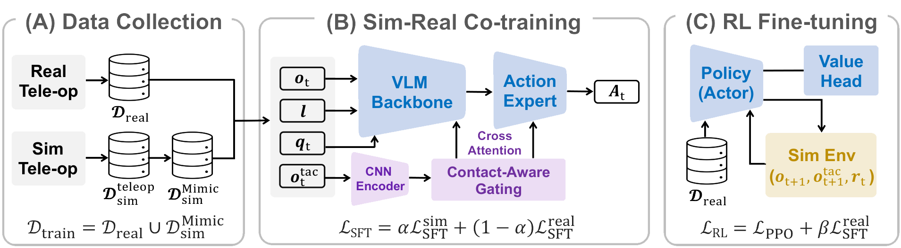
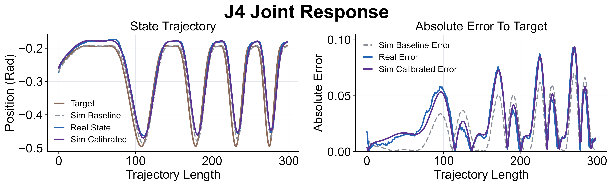
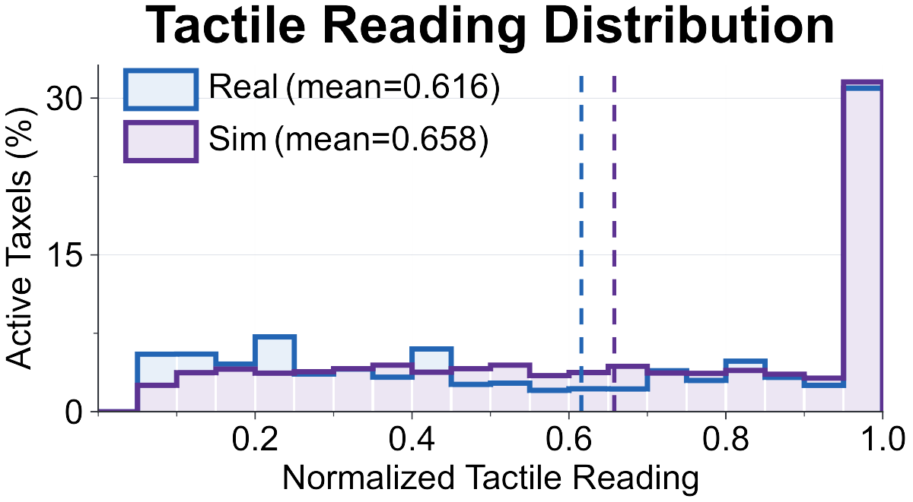
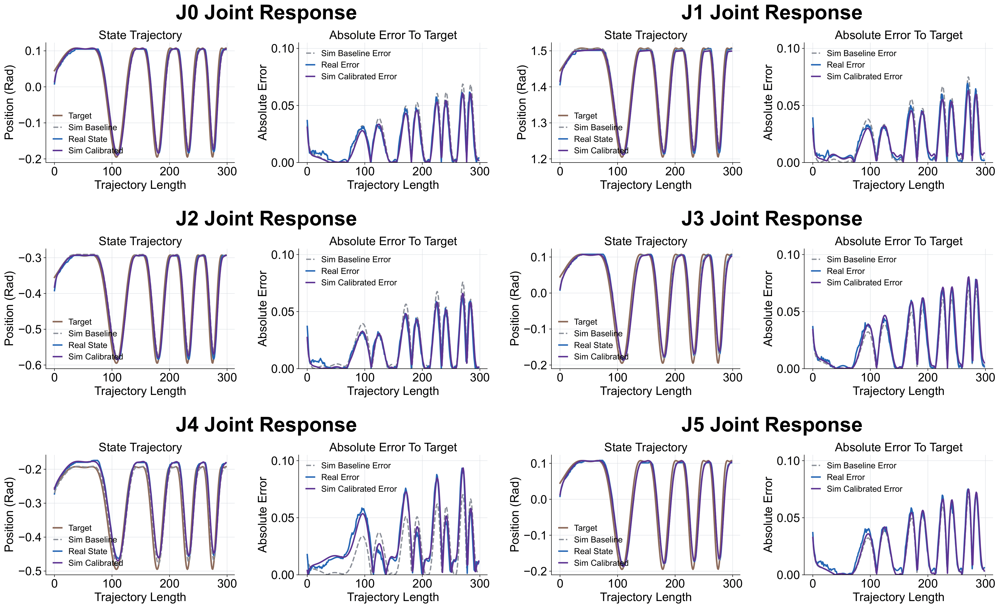
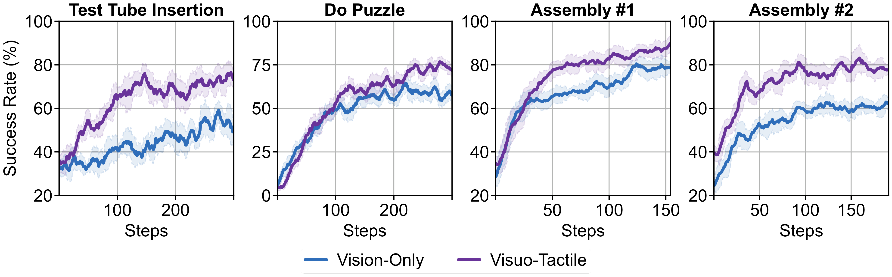
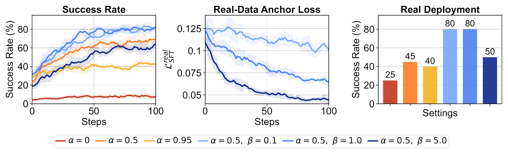

We collect minimal real demonstrations together with simulated data, then further scale up the simulated set using MimicGen to increase trajectory diversity.
Vision-language-action (VLA) models provide strong visual, language, and action priors for robot manipulation, but visual observations alone often miss the local contact state required for contact-rich tasks. We present TacCoRL, a scalable framework that injects Tactile feedback into VLA policies and improves them through sim-real Co-training and simulation-based Reinforcement Learning (RL), without requiring large-scale tactile pretraining or extensive real-world contact exploration. The key idea is not only adding touch as an input, but learning how contact readings should modulate action responses in near-failure states that are rare in demonstrations and risky to collect on hardware. We use a real-aligned simulation as a closed-loop training environment for contact interaction. Mixed simulated and real trajectories first warm-start tactile-conditioned actions in the pretrained policy. Reinforcement learning with verifiable task rewards then optimizes the policy using simulated contact rollouts. It reinforces tactile-conditioned actions that lead to task completion, while a supervised objective on real trajectories keeps the refined policy anchored to deployment visual, tactile, and action distributions. The resulting policy transfers directly to the real robot without privileged simulation state or online real-world RL. Across four bimanual contact-rich tasks, the final visuo-tactile policy achieves an average success rate of 72.5%, compared to baseline of 50.0%.

We warm-start the policy via mixed supervised co-training. Tactile information is encoded and routed through contact-aware gating to modulate both VLM and the action expert. Co-training provides the policy with a tactile-conditioned prior and offers RL a viable initialization for refining contact behavior.
Sparse-reward RL uses simulation rollouts to learn tactile-conditioned corrections. A supervised real-data loss keeps these updates anchored to the real deployment distribution.
Across four trials with randomized tube poses, visual occlusion hides contact. Our method uses tactile feedback for closed-loop translation and reorientation, recovering near-failures and improving insertion accuracy.
Representative real-robot executions of our policy across four contact-rich bimanual tasks.
Comparison with Baselines
After contact, the gripper or held object often occludes the rim, puzzle opening, or mating edge while residual pose errors remain. Our method combines tactile histories with sim-real co-training and simulator RL fine-tuning to convert hidden contact states into closed-loop corrections.
Success Rates
Tube Insertion
w/o Touch
Failed to Adjust Angle due to Occlusion
w/o Sim Fine-Tuning
Failed to Re-Align Insertion Direction
Ours
Accurate Insertion with In-Hand Adjustment
w/o Touch
Incorrect Insertion Direction
w/o Sim Fine-Tuning
Failed to Adjust Insertion Pose
Ours
Accurate Insertion with In-Hand Adjustment
w/o Touch
Failed Without Tactile Feedback
w/o Sim Fine-Tuning
Incorrect Insertion Pose
Ours
Accurate Insertion with In-Hand Adjustment
w/o Touch
Failed to Adjust Angle due to Occlusion
w/o Sim Fine-Tuning
Incorrect Insertion Direction
Ours
Accurate Insertion with In-Hand Adjustment
Left shows the held-out J4 replay, where gravity compensation caused the largest calibration gap; after SysID, simulation matches real tracking. Right shows aligned tactile distributions from matched rollouts, supporting simulator post-training.


Controller and Tactile Alignment
View sim-to-real calibration details



Across all tasks, visuo-tactile policies consistently achieve higher success rates than vision-only policies during simulator RL. This indicates that tactile histories remain useful during on-policy refinement, rather than serving solely as an additional imitation-learning input.

Tactile Feedback Improves Simulator RL
We vary the co-training ratio α and real-anchor weight β on the Assembly #2 task and report model performance in terms of simulator success rate, real-data anchor loss, which measures policy deviation from real demonstrations during simulation, and real-world deployment success rate.

Ablation of Co-Training and Real-Data Anchoring
Direct RL from the base VLA model fails across all tasks. Sim-real co-training provides a strong initialization and substantially improves the success rate for simulator-based RL. Incorporating tactile feedback further improves policy performance.
| Settings | Vision-Only | Visuo-Tactile | ||||||
|---|---|---|---|---|---|---|---|---|
| Tube | Puzzle | Asm. #1 | Asm. #2 | Tube | Puzzle | Asm. #1 | Asm. #2 | |
| After Co-Training | 42% | 12% | 39% | 39% | 41% | 16% | 47% | 58% |
| RL Start with Exploration Noise | 35% | 5% | 25% | 25% | 36% | 4% | 35% | 42% |
| RL from Base VLA | 0% | 0% | 0% | 0% | 0% | 0% | 0% | 0% |
| RL with Co-Training | 50% | 54% | 77% | 61% | 72% | 71% | 92% | 79% |
Simulation Success Rates
Rows compare training stages; columns compare vision-only and visuo-tactile policies. Tactile feedback and RL post-training together achieve the highest real-world success rates.
| Training Stage | Vision-Only | Visuo-Tactile | ||||||
|---|---|---|---|---|---|---|---|---|
| Tube | Puzzle | Asm. #1 | Asm. #2 | Tube | Puzzle | Asm. #1 | Asm. #2 | |
| Real-Only Fine-Tuning | 20% | 5% | 35% | 25% | 45% | 15% | 35% | 40% |
| Sim-Real Co-Training | 35% | 10% | 40% | 35% | 50% | 25% | 45% | 55% |
| RL Post-Training | 35% | 25% | 80% | 60% | 70% | 45% | 95% | 80% |